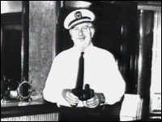
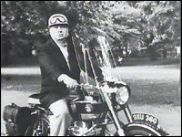

CHAPTER FIVE
Hubbard's Travels
Susan Meister's death had no effect upon the Sea Org's
relationship with Morocco. The Apollo crew established a land base, called the
Tours Reception Center, in Morocco in 1971. They were trying to get into the king's favor,
and started training government officials, including Moroccan Intelligence agents, in
Scientology techniques. Officials were put on the E-meter and Security-Checked by
French-speaking Sea Org members. The Hubbards moved ashore. 1
 From his villa in Morocco, in March 1972, the
Commodore explained his twelve point "Governing Policy" for finance. Points A
and J were the same: "MAKE MONEY." Point K was "MAKE MORE MONEY." And
the last point, L, was "MAKE OTHER PEOPLE PRODUCE SO AS TO MAKE MONEY." At last,
an honest admission of this major plank of Hubbard's philosophy. 2
Hubbard also introduced the "Primary
Rundown," where a student would "word-clear" ten Hubbard lectures about
study. That meant going through the definition of every word in the lectures in a non
"dinky" dictionary (to use Hubbard's expression), and using the word in every
defined context until it was thoroughly understood. It was a gargantuan task. The word
"of," for instance, has fifteen definitions in the World Book Dictionary,
favored by Hubbard at the time. At the end of this arduous procedure, the student
allegedly became "superliterate."
The South African Commission of Enquiry submitted its
report on Scientology in June 1972. It recommended that a Register for psychotherapists be
established, as had the Foster Report in Britain. It also recommended that the practices
of Disconnection, "public investigation" (i.e. noisy investigation),
security checking, and the dissemination of "inaccurate, untruthful and harmful
information in regard to psychiatry," should be legislated against. The report added:
"No positive purpose will be served by the banning of Scientology as such."
Neither this nor any other legislative action was actually taken. 3
The Apollo sailed from Morocco to Portugal in
October, for repairs. Hubbard and a contingent of Sea Org members stayed behind. Morocco
was as close as Hubbard ever came to having the ear of a government, but relations broke
down. In the Scientology world, there is a rumor that the upset had something to do with
Moroccan Intelligence, which does lend a certain mystique. A secret Guardian's Office
investigation revealed a more prosaic error, however. In 1971, Hubbard had reintroduced
Heavy Ethics, and Scientologists continued to use the Ethics Conditions. For being
persistently late for their Scientology courses, members of the Moroccan Post Office were
assigned a condition of "Treason." To the Moroccans, "Treason," no
matter how much it was word-cleared, meant only one thing: execution. The Post Office
officials set themselves against the Scientologists, and won. 4
As a grim footnote, the Moroccan official who had negotiated with the Scientologists was
later executed for treason. The contacts with Intelligence had actually been with a
faction which was to fail in an attempted coup d'etat.
The panic, starting from Hubbard's typically
exaggerated use of a simple word, ended with an order for the Scientologists to quit
Morocco, in December 1972. Hubbard himself was given only twenty-four hours. He flew to
Lisbon, and then secretly on to New York. The French had instituted proceedings against
him for fraud, so he had to duck out of sight. He was being labeled undesirable by more
and more governments.
Meanwhile, in Spain, eight Scientologists had been
arrested for possession of chocolates laced with LSD. They were held in filthy cells for
four days, and interviewed by a U.S. Drug Enforcement Administration agent. As it turned
out the chocolates did not contain LSD. 6
Two Sea Org members accompanied Hubbard to New York.
The three stayed in hiding for nine months. Hubbard was in poor health. Photographs taken
at the time show an overweight, dishevelled man with a large growth on his forehead.
Despite his supposed resignation from management in 1966, Hubbard had continued to control
the affairs of his Church, usually on a daily basis. Now he had only a single telex
machine. His prolific Scientological output ground almost to a halt. What little he wrote
shows a preoccupation with his poor physical condition. In July, he published an
exhaustive summary of approaches to ill health. He also initiated the "Snow White
Program," directing his Guardian's Office to remove negative reports about
Scientology from government files, and track down their source. He was convinced of the
conspiracy against him, and had no qualms about breaking the law to achieve the
"greatest good for the greatest number," meaning the greatest good for L. Ron
Hubbard. 7
While Hubbard was in New York, the Australian states
began the process which eventually led to the repeal of their Scientology Prohibition
Acts. The State of Victoria, which had started the Australian crackdown, even gave the
Church of the New Faith (aka Scientology) tax-exemption.
In the U.S. the Food and Drug Administration was
ordered to return all the materials seized eight years earlier, although the E-meters were
still adjudged to be mislabelled, which had been the real issue at stake.
Another secret bank account was opened for Hubbard
under the name United States Church of Scientology Trust. Hubbard was the sole trustee of
this Swiss account, and it received large donations from Scientology organizations
throughout the world. 8
In one of the few Bulletins issued during his stay in
New York, Hubbard wrote:
The actual barrier in the society is the
failure to practice truth .... Scientology is the road to truth and he who would follow it
must take true steps.
Hubbard's hypocrisy knew no bounds. In an issue
originally called "What Your Fees Buy" ("Fees" later became
"Donations"), Hubbard continued to insist that he did not benefit financially
from Scientology, and had donated $13½ million above and beyond the cost of his own
research. He claimed that he had not been paid for his lectures and had not even collected
author's royalties on his books. Scientologists could take Hubbard's word for it that none
of the money they paid to the Church went to him.
In August 1973, yet another new corporation was
formed, once again with the sole purpose of siphoning funds to Hubbard. Hubbard was to
prove yet again that in matters of taxation, the man with the "most imagination"
wins, and Hubbard had a very vivid imagination. The Religious Research Foundation was
incorporated in Liberia. Non-U.S. students paid the RRF for their courses on the Flagship,
so the corporation which ran the ship was not being paid, and the money was going straight
into an account controlled by Hubbard. The Scientology Church was again billed
retroactively for earlier services rendered. This was the second time the Church had paid
Hubbard for these services: retroactive billing was the function of the "LRH Good
Will Account" in the late 1960s. The Church paid for the third time in 1982. Millions
of dollars paid in good faith by Scientologists for the further dissemination of their
beliefs went straight into Hubbard's personal accounts, and were used to keep him in
luxury, with a million dollar camera collection, silk shirts tailored in Saville Row, and
a large personal retinue at his beck and call. 9
Hubbard rejoined the Apollo at Lisbon in
September 1973. He had complained about the dust aboard the flagship, so the crew spent
three months crawling through the ventilation shafts of the ship cleaning them with
toothbrushes, while the Apollo sailed between Portuguese and Spanish ports. 10
 In November, the Apollo was in
Tenerife. Hubbard went for a joyride into the hills on one of his motorbikes. The bike
skidded on a hairpin bend, hurling the Commodore onto the gravel. He was badly hurt, but
somehow managed to walk back to the ship. He refused a doctor, and his medical orderly,
Jim Dincalci, was surprised at his demands for painkillers. Hubbard turned on him, and
said "You're trying to kill me." Kima Douglas took Dincalci's place. She thinks
Hubbard had broken an arm and three ribs, but could not get close enough to find out. With
Hubbard strapped into his chair, the Apollo put to sea, encountering a Force 5
gale. The Commodore screamed in agony, and the screaming did not stop for six weeks. 11
In Douglas' words: "He was revolting to be with -
a sick, crotchety, pissed-off old man, extremely antagonistic to everything and everyone.
His wife was often in tears and he'd scream at her at the top of his lungs, 'Get out of
here!' Nothing was right. He'd throw his food across the room with his good arm; I'd often
see plates splat against the bulkhead .... He absolutely refused to see another doctor. He
said they were all fools and would only make him worse. The truth was that he was
terrified of doctors and that's why everyone had to be put through such hell."
While on the mend, Hubbard introduced his latest
innovation in Ethics Technology: the "Rehabilitation Project Force." This became
Scientology's equivalent to imprisonment, with more than a tinge of the Chinese
Ideological Re-education Center. In theory the RPF deals with Sea Org members who
consistently fail to make good. They are put on "MEST work," which is to say
physical labor, and spend several hours each day confessing their overts (transgressions),
and revealing their Evil Purposes.
Life in the Sea Org was already fairly gruelling, but
the Rehabilitation Project Force went several steps further. Gerry Armstrong, who spent
over two years on the RPF, has given this description:
It was essentially a prison to which crew who
were considered nonproducers, security risks, or just wanted to leave the Sea Org, were
assigned. Hubbard's RPF policies established the conditions. RPF members were segregated
and not allowed to communicate to anyone else. They had their own spaces and were not
allowed in normal crew areas of the ship. They ate after normal crew had eaten, and only
whatever was left over from the crew meal. Their berthing was the worst on board, in a
roach-infested, filthy and unventilated cargo hold. They wore black boilersuits, even in
the hottest weather. They were required to run everywhere. Discipline was harsh and
bizarre, with running laps of the ship assigned for the slightest infraction like failing
to address a senior with "Sir." Work was hard and the schedule rigid with seven
hours sleep time from lights out to lights on, short meal breaks, no liberties and no free
time...
When one young woman ordered into the RPF took
the assignment too lightly, Hubbard created the RPF's RPF and assigned her to it, an even
more degrading experience, cut off even from the RPF, kept under guard, forced to clean
the ship's bilges, and allowed even less sleep. 12
Others verify Armstrong's account. The RPF rapidly
swelled to include anyone who had incurred Hubbard's disfavor. Soon about 150 people,
almost a third of the Apollo's complement, were being rehabilitated. This careful
imitation of techniques long-used by the military to obtain unquestioning obedience and
immediate compliance to orders, or more simply to break men's spirits, was all part of a
ritual of humiliation for the Sea Org member.
Hubbard's railing against the "enemies of
freedom" (i.e., the critics of Scientology) continued in a confidential issue:
"It is my intention that by the use of professional PR tactics any opposition be not
only dulled but permanently eradicated... If there will be a long-term threat, you are to
immediately evaluate and originate a black PR campaign to destroy the person's repute and
to discredit them so thoroughly that they will be ostracized." 13
Elsewhere Hubbard had defined black PR as
"spreading lies by hidden sources," and added "it inevitably results in
injustices being done." 14
Most Scientologists remain ignorant of the confidential PR issue.
Despite Hubbard's research into the subject, public
relations had not improved. In 1974, the Apollo was banned from several Spanish
ports. In October, while she was moored in Funchal, Madeira, the ship's musicians, the
"Apollo All Stars," held a rock festival. Something went terribly wrong, and the
day ended with an angry crowd bombarding the Apollo with stones: a
"rock" festival (the pun stuck and is generally used by those who were there).
It started with a taxi arriving on the dock, from the trunk of which a small group of
Madeirans unloaded stones. Bill Robertson, the Apollo's captain at the time,
ordered the fire hoses to be turned on this small group, and soon the dock was milling
with jeering Madeirans. The rioters tried to set the Apollo adrift. They pitched
motorcycles and cars belonging to the Scientologists off the dock. A Scientology story
that a Portuguese army contingent stood by and watched is not confirmed by witnesses. They
also failed to mention the response of the Apollo crew, some of whom returned the
barrage of stones and bottles. The Commodore marched up and down in his battle fatigues
yelling orders, and finally the Apollo moved away from the dock to anchor off
shore. Ironically, the Madeirans seem to have thought the Apollo was a CIA spy
ship. Scientologists attribute this to CIA black PR. Other observers attribute it to the
intensely secretive behaviour of the Apollo, and the ongoing "shore stories"
(lies) about her real function and activities. 15
The Mediterranean had been effectively closed to the Apollo
through Hubbard's paranoid secrecy and his inability to maintain friendly relations. Now
the Spanish and Portuguese were set against her. Hubbard decided to head for the Americas,
and it was announced that the Apollo was sailing for Buenos Aries. More
subterfuge, as she was actually set for Charleston, South Carolina, by way of Bermuda.
The Scientologists have it that a spy aboard the Apollo
alerted the U.S. government of her true destination. They do not mention the advance
mission of the Apollo All Stars, who usually preceded the ship to create a friendly
atmosphere with music and song. After their reception in Madeira, the All Stars should
have realized it was time to change their image. Instead they went ahead to Charleston.
According to the Scientologists, the welcoming party waiting there included agents from
the Immigration Office, the Drug Enforcement Agency, U.S. Customs, and the Coast Guard,
along with several U.S. Marshals who were to arrest Hubbard, and deliver a subpoena for
him to appear in an Internal Revenue Service case. 16
Just beyond the territorial limit, the Apollo
caught wind of this reception committee, and, radioing that she was sailing for Nova
Scotia, changed course for the West Indies. The Apollo then cruised the
Caribbean. Initially relations were good, but soon, despite all the efforts of the Apollo
All Stars, and Ron's new guise as a professional photographer (trailing his
"photo-shoot org" behind him), the welcome wore thin. 17
In Curaçao, in the summer of 1975, Hubbard had a
heart attack. Despite his protests, Kima Douglas, his medical orderly, rushed him to
hospital. While in the ambulance Hubbard suffered a pulmonary embolism (a blood clot in
the artery to his lungs). He spent two days in intensive care, and three weeks in a
private hospital. While there his food was carried ten miles from the ship. Three
Messengers sat outside his room twenty-four hours a day (they had to make do with the
hospital food). He did not return to the Apollo for another three months. 18
While the Commodore was incapacitated, several of his
U.S. churches recouped their tax-exempt status, and the Attorney General of Australia
lifted the ridiculous ban on the word Scientology. An Appeal Court in Rhodesia also lifted
a ban on the import of Scientology materials.
FOOTNOTES
Additional sources:
"Debrief of Jim Dincalci on NY Trip with LRH"; What Is Scientology?,
pp. 154-8 & 184
1. Sea Org Orders of
the Day ("OODs"), 7 June 1971; GA 15, pp.2482-4 & 17, pp. 2847-9
2. Hubbard, The
Management Series 1970-1974, p.384
3. Wallis, p.198
4. Interview with witness
5. Vol. 9 of transcript of Church
of Scientology of California vs. Gerald Armstrong, Superior Court for the County of
Los Angeles, case no. C 420153, p.1436; Playing Dirty, p.80
6. Playing Dirty,
p.82
7. Armstrong vol.
17, p.2675f; Schomer in GA 25, p.4480; Technical Volumes vol. 8, p. 189;
Guardian Order 732, "Snow White Program," 28 April 1073.
8. CSC vs. IRS, 24
September 1984, p.66
9. Kima Douglas in Armstrong
vol. 25, pp.4444ff; Laurel Sullivan in Armstrong vol. 19A, pp.3007, 3018 &
3020; Mary Sue Hubbard in Armstrong vol. 17, p.2776
10. Armstrong vol.
9, p. 1436; Urquhart interview
11. Miller interview with
Kima Douglas, Oakland, California, September 1986.
12. Gerald Armstrong
affidavit, March 1986, pp.53ff
13. BPL "Confidential -
PR Series 24 - Handling Hostile Contacts / Dead Agenting," 30 May 1974 (not in Organization
Executive Course)
14. Hubbard, Modern
Management Technology Defined, definition 3
15. Playing Dirty,
p.82; Interview Urquhart; Miller interview with Kima Douglas
16. Playing Dirty,
p. 84
17. Armstrong vol.
9, p.1431; Sullivan in Armstrong vol. 19A, p.3190
18. Miller interview with
Kima Douglas |